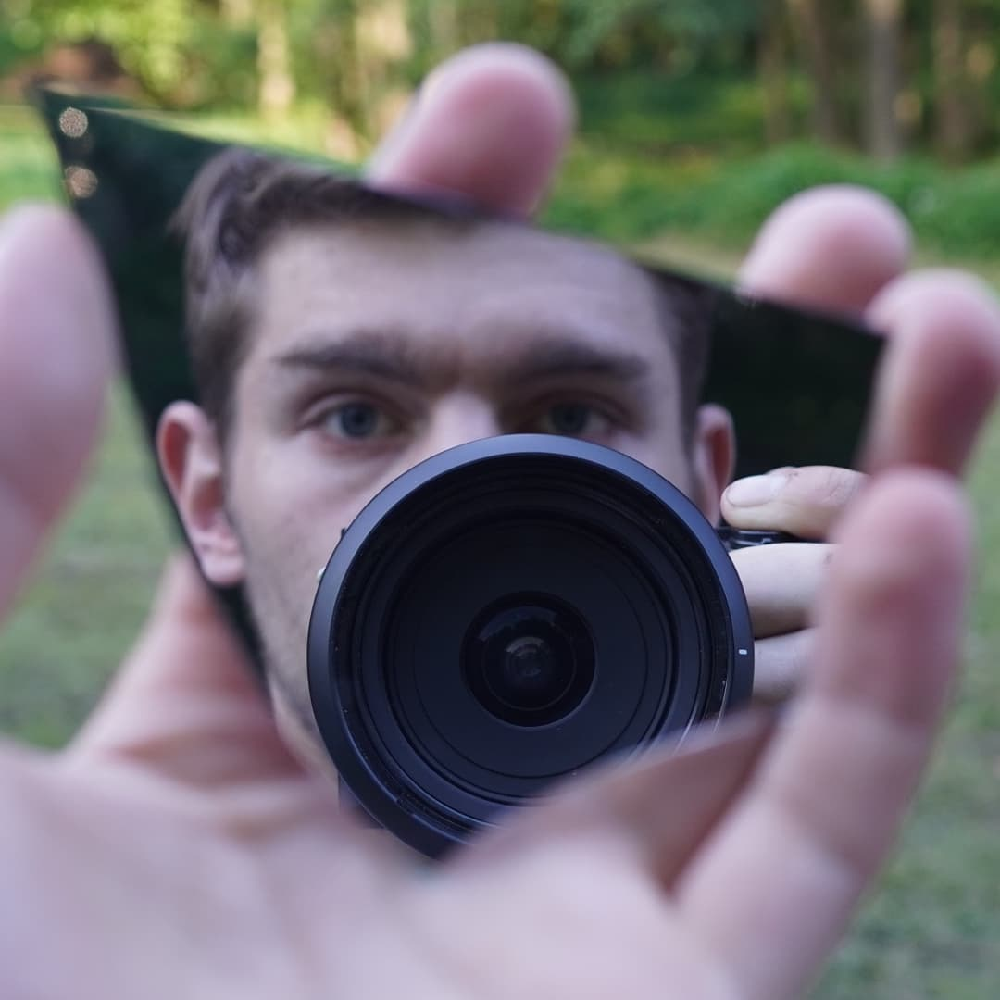
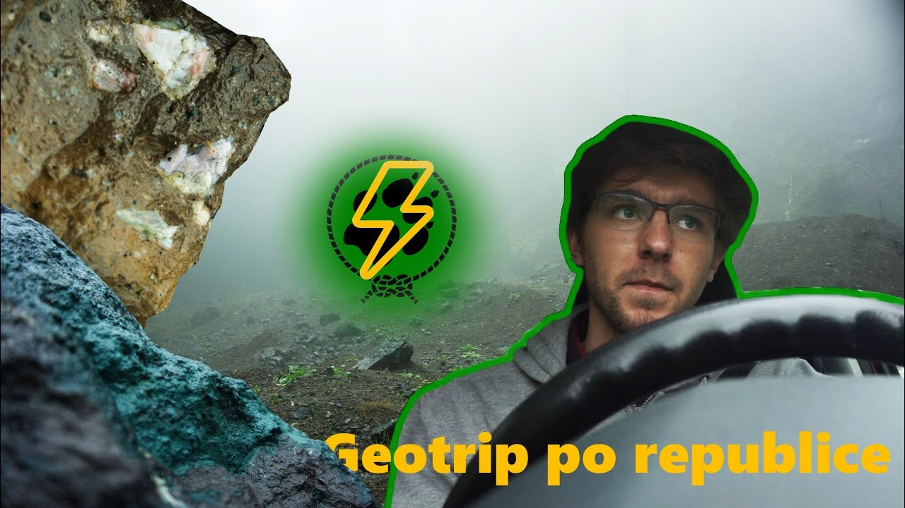
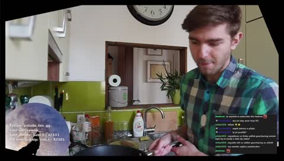
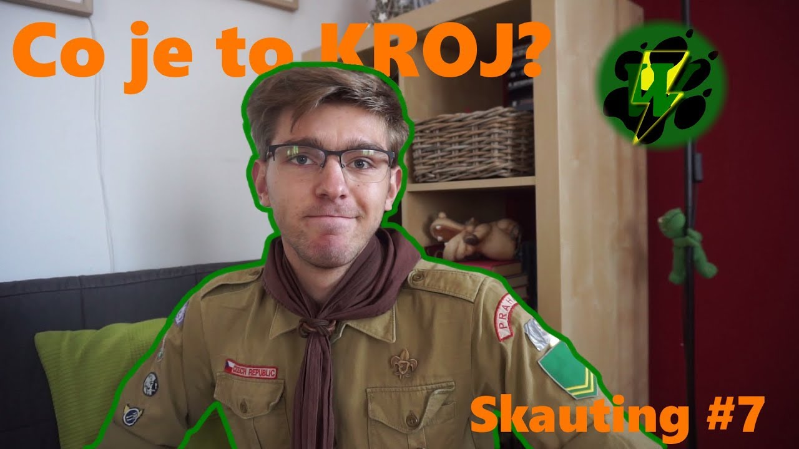
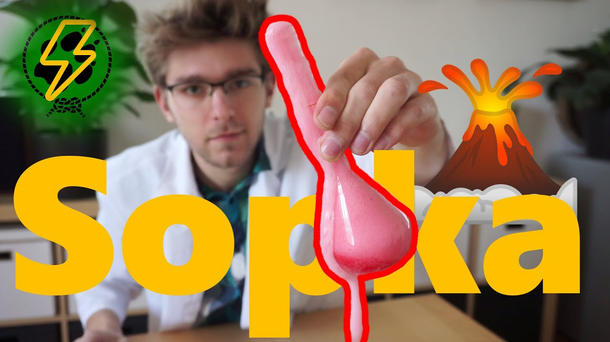
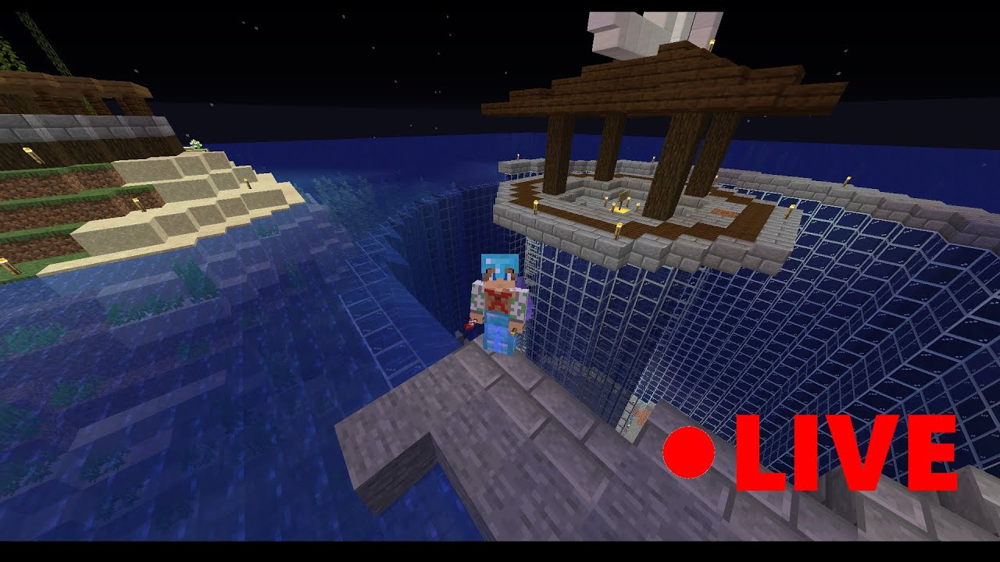

Wanderbolt
Youtuber, streamer a
- snílek
- skaut
- student
- fotbalista
- chemik
- snílek
- skaut
- student
- fotbalista
- chemik
Kdo jsem?
Na internetu vystupuji pod nickem Wanderbolt, avšak in real life mě kamarádi oslovují často Wandy... nebo Ondro. Narodil jsem se v minulém tisíciletí, přesněji 1999. Hraju na kytaru, baskytaru (tu ale nevlastním) a ukulele. Nesedím jen u počítače, jsem skaut, rád fotím a tvořím, ať už na papír a nebo třeba ze dřeva
Youtube
Kanál na youtube provozuji již od roku 2014, za tu dobu jsem stihl nasbírat přes 2300 odběratelů. Moje nejsledovanější video nasbíralo skoro 150 tisíc zhlédnutí!
Twitch
Na twitchi jsem začal streamovat v roce 2019, abych mohl být v kontaktu se svými fanoušky častěji a ukázal aspekty mého života se kterými se nemusí na mém youtube kanále setkat
Skauting
Už od dětství jsem členem skautského oddílu, ve kterém jsem se nakonec stal vedoucím. Proto rád představuji aspekty skautského života, včetně historie této organizace.
Věda
Jako student chemie a geologie beru jako osobní poslání představit tyto vědy především mladšímu publiku zábavnou a chytlavou formou.
Hry
Content, který odstartoval můj youtubový kanál a poslední dobou na něj bohužel nemám moc čas. I přesto jsem stále duší gamer.